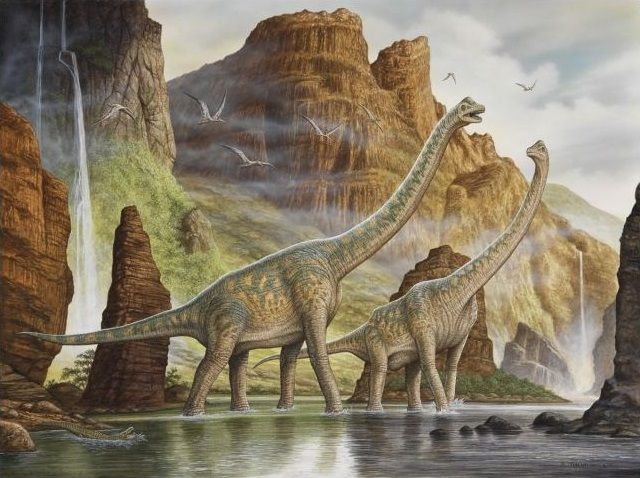
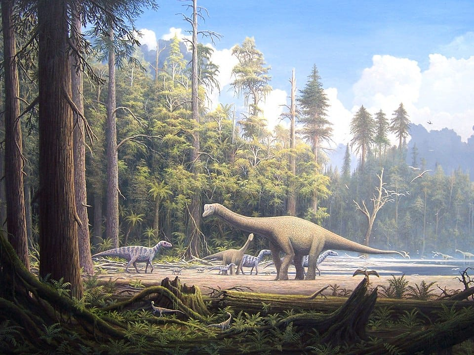
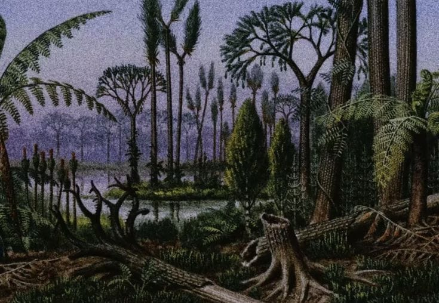
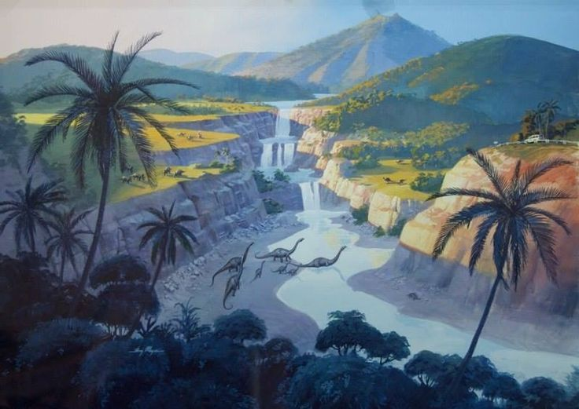
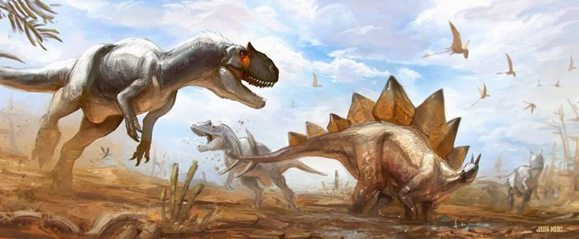
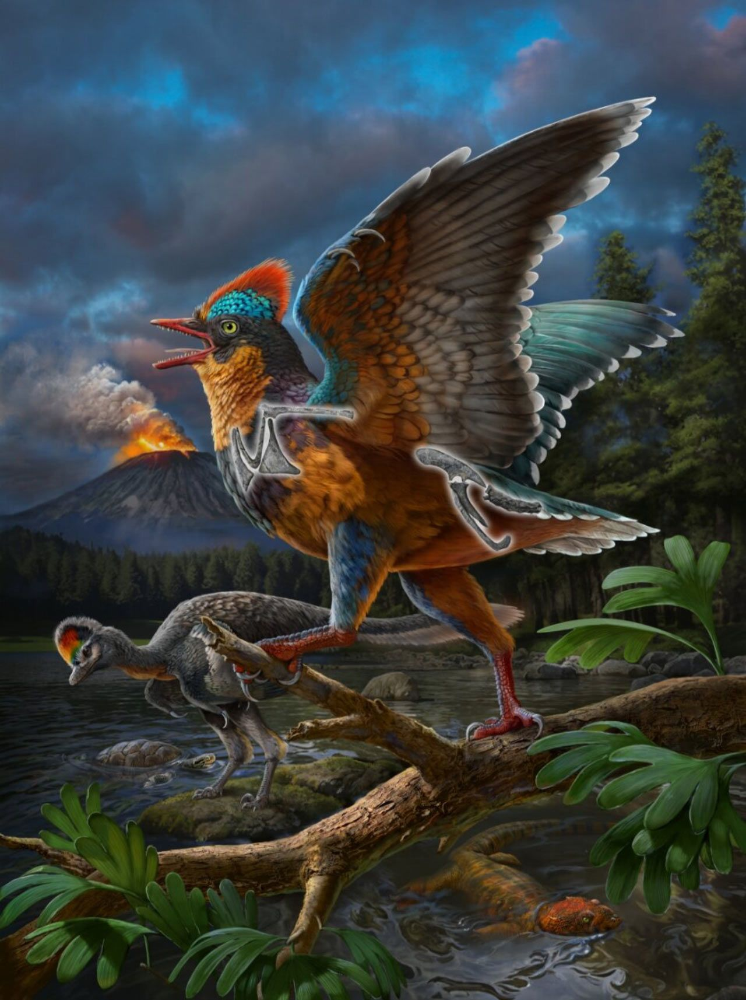
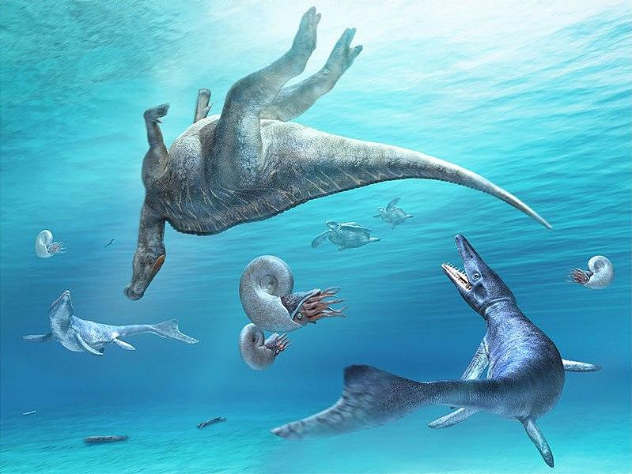
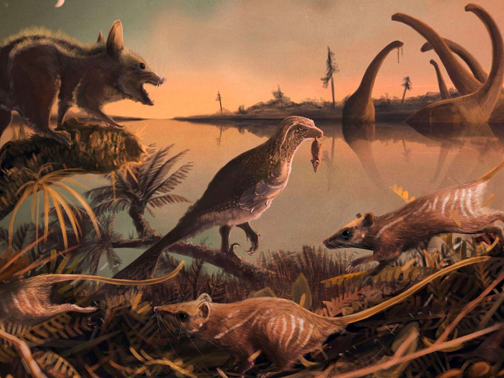
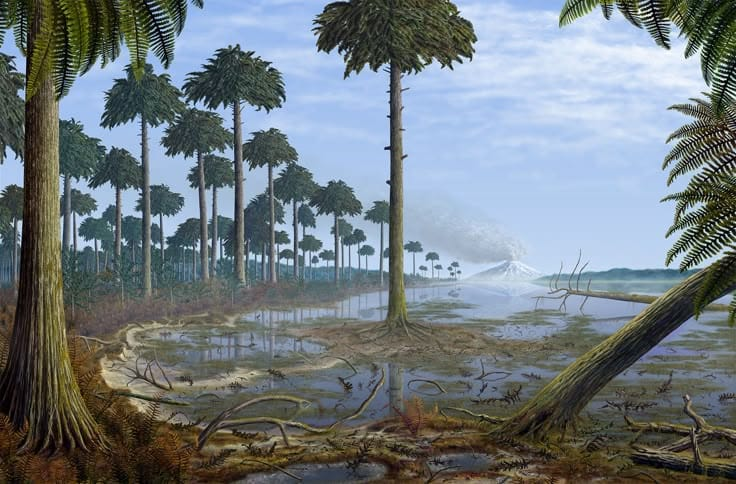
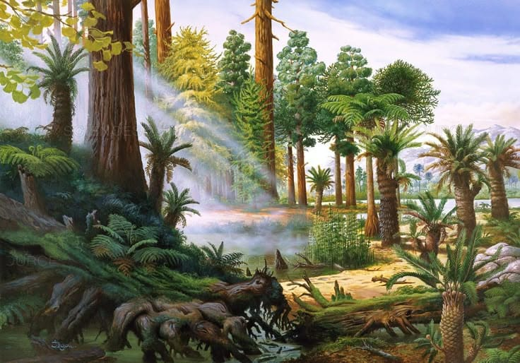

El Jurasico
El Jurásico es el segundo sistema y período del Mesozoico en la escala temporal geológica. Sucede al Triásico y precede al Cretácico. Comenzó hace aproximadamente 201 millones de años y terminó hace 145 millones de años. Debe su nombre a la cadena montañosa del Jura, en los Alpes, donde el geólogo prusiano Alexander von Humboldt identificó este sistema en 1795. Refiriéndose a esos mismos terrenos del Jura, el término Jurásico fue acuñado por primera vez en 1829 por el naturalista francés Alexandre Brongniart en su obra Tableau des terrains qui composent l'écorce du globe ou essai sur la structure de la partie connue de la terre (Descripción de los terrenos que constituyen la corteza de la Tierra o ensayo sobre la estructura de la parte conocida de la Tierra).
Este período se caracteriza por la hegemonía de los grandes dinosaurios y por la fragmentación del supercontinente Pangea en dos masas: Laurasia y Gondwana. De esta última se separó Australia (en el Jurásico superior y principios del Cretácico), del mismo modo que Laurasia se dividió en Norteamérica y Eurasia.
Durante el Jurásico fueron comunes las gimnospermas, especialmente las coníferas, Bennettitales y cícadas, así como los helechos. Muchos tipos de dinosaurios poblaron la Tierra, incluyendo saurópodos, carnosaurios y estegosaurios. Los mamíferos eran comunes, aunque de pequeño tamaño. También aparecieron las primeras aves y lagartos. En los mares, los ictiosaurios y plesiosaurios se diversificaron. Abundaban los bivalvos, ammonites y belemnites. Los erizos de mar eran muy comunes, al igual que los crinoides, estrellas de mar, esponjas y braquiópodos, como los terebratúlidos y rinconélidos.
El Jurásico se divide en tres épocas: Jurásico Inferior, Medio y Superior, también conocidas en Europa como Lias, Dogger y Malm, aunque estos términos son actualmente considerados obsoletos.


Paleogeologia
Paleo geografía
Durante el Jurásico Inferior, el nivel del mar experimentó cambios menores. Sin embargo, en el Jurásico Superior se produjeron oscilaciones más rápidas y una elevación significativa del nivel del mar, lo que ocasionó la inundación de vastas regiones de América del Norte y Europa.
En Europa, existían dos provincias biogeográficas diferenciadas: la provincia de Tetis, situada al sur, y la provincia Boreal, al norte. Los arrecifes de coral se restringieron principalmente a la provincia de Tetis, mientras que la transición entre ambas provincias se localizaba en la región de la península ibérica. Las plantas propias de climas cálidos ocuparon un amplio cinturón terrestre que se extendía hasta los 60 grados de latitud. Tanto la flora de Gondwana en el sur como la de Siberia al norte incluía diversos grupos de helechos, lo que sugiere la existencia de climas sin heladas, ya que sus parientes modernos no las toleran.
El registro geológico del Jurásico es particularmente bueno en el oeste de Europa, donde extensas secuencias de sedimentos marinos indican que gran parte del continente estuvo sumergido bajo mares tropicales poco profundos. Destacan lugares como la Costa Jurásica (reconocida como Patrimonio Mundial) y los famosos yacimientos fosilíferos o lagerstätten de Holzmaden y Solnhofen, que han aportado fósiles excepcionalmente preservados.
A principios del Jurásico, todas las grandes masas continentales estaban unidas en el supercontinente Pangea. Durante este período, comenzó su fragmentación en dos grandes bloques: Laurasia, al norte, y Gondwana, al sur. La separación inicial entre Norteamérica y África comenzó también en esta etapa temprana, acompañada por una intensa actividad volcánica asociada a la formación de la Provincia Magmática del Atlántico Central.
El océano Atlántico Norte permanecía relativamente estrecho, mientras que el Atlántico Sur no comenzó a abrirse hasta el Cretácico. Los continentes estaban rodeados por el vasto océano Panthalassa, mientras que el océano Tethys se extendía entre Gondwana y Asia. Al final del Triásico y comienzo del Jurásico, una transgresión marina inundó gran parte de Europa central y occidental, transformándola en un archipiélago de islas rodeadas por mares someros.
Durante este período, los polos norte y sur estaban cubiertos por océanos, sin masas continentales importantes. A partir del Jurásico Temprano, el océano Boreal se conectaba con el protoatlántico a través de un pasaje conocido como el "corredor vikingo", una vía marítima transcontinental situada entre el Escudo Báltico y Groenlandia. Durante el Calloviano, se formó el Mar Epicontinental de Turgai, estableciendo una barrera marina entre Europa y Asia.
Hacia finales del Jurásico Temprano, Madagascar y la Antártida comenzaron a separarse del continente africano, un proceso vinculado a la actividad volcánica de las grandes provincias ígneas de Karoo-Ferrar. Esta separación dio origen a la apertura del océano Índico occidental y marcó el inicio de la fragmentación de Gondwana.
En las primeras etapas del Jurásico, América del Norte y América del Sur aún permanecían unidas. Sin embargo, para el Jurásico Tardío ya se habían separado, dando lugar a la formación de la Vía Marítima del Caribe, también conocida como el Corredor Hispánico, que conectaba el Atlántico Norte con el borde oriental de Panthalassa. La evidencia paleontológica indica que esta vía ya estaba abierta desde el Jurásico Temprano.


PaleoZoologia
Fauna Terrestre del Jurásico
Dinosaurios
Durante el Jurásico, los dinosaurios se diversificaron enormemente, convirtiéndose en los animales dominantes de los ecosistemas terrestres.
Dinosaurios herbívoros
Sauropodos (gigantescos, cuadrúpedos de cuello largo):
Brachiosaurus: enorme, con patas delanteras más largas que las traseras.
Diplodocus: cuerpo alargado y cola larga como látigo.
Apatosaurus: otro de los grandes saurópodos del oeste de América del Norte.
Estegosaurios:
Stegosaurus: con placas óseas en la espalda y espinas en la cola, usado probablemente para defensa y termorregulación.
Ornitópodos primitivos: dinosaurios bípedos más pequeños y ágiles, como Camptosaurus.
Dinosaurios carnívoros
Terópodos (bípedos, depredadores):
Allosaurus: uno de los mayores carnívoros del Jurásico.
Ceratosaurus y Megalosaurus: depredadores medianos.
Compsognathus: uno de los más pequeños, rápido y ágil.

Aves primitivas
Aparece el primer pájaro conocido: Archaeopteryx, descubierto en Alemania. Tenía plumas y alas, pero también dientes, garras y cola ósea, lo que muestra su transición desde los dinosaurios terópodos hacia las aves modernas.
Estas aves tempranas probablemente vivían en los árboles o planeaban entre ramas, y se alimentaban de insectos.
Reptiles voladores
Pterosaurios
No eran dinosaurios, pero convivieron con ellos y dominaron los cielos jurásicos.
Ejemplos:
Pterodactylus: uno de los primeros conocidos, con alas membranosas.
Rhamphorhynchus: con larga cola y dientes afilados.
Algunos eran pequeños como cuervos, mientras que otros tenían envergaduras de varios metros.

Otros reptiles terrestres
Cocodrilos primitivos: no eran idénticos a los actuales; algunos eran terrestres y ágiles.
Tuatara y otros reptiles lepidosaurios (relacionados con lagartos y serpientes) ya existían.
Fauna marina del Jurásico
Los mares jurásicos eran cálidos y poco profundos, con abundante vida.
Reptiles marinos
Ictiosaurios: parecidos a los delfines, con cuerpos hidrodinámicos. Ej: Ophthalmosaurus.
Plesiosaurios: con cuellos largos y aletas, como Cryptoclidus.
Pliosaurs: parientes de los plesiosaurios, pero con cuellos cortos y grandes cabezas, como Liopleurodon, un temible superdepredador.
Invertebrados marinos
Ammonites: moluscos con conchas espirales, muy abundantes y diversos, usados como fósiles guía.
Belemnites: parecidos a los calamares, con una concha interna.
Erizos, estrellas de mar y crustáceos también eran comunes.
Peces
Existían peces cartilaginosos (tiburones primitivos) y óseos, muchos de los cuales ya mostraban características modernas.
También habitaban los mares antiguos grandes tiburones como Hybodus.

Primeros mamíferos
Aunque aún eran pequeños y poco comunes, los mamíferos ya estaban presentes en el Jurásico. Eran animales nocturnos, insectívoros y vivían en madrigueras o árboles.
Ejemplos:
Morganucodon
Docodon
Castorocauda (parecido a un castor primitivo, probablemente nadador)

Extincion
Aquí tienes una sección redactada y ampliada sobre la extinción al final del Jurásico, con un estilo fluido y enciclopédico:
Extinción al final del Jurásico
A diferencia de los eventos de extinción masiva que marcaron el final del Pérmico o del Cretácico, el final del Jurásico no estuvo caracterizado por una extinción global catastrófica. Sin embargo, sí se produjo un episodio de extinción de menor escala que afectó significativamente a algunos grupos de organismos, especialmente en los ecosistemas marinos. Este evento, conocido como la extinción del Jurásico-Terciario (o más específicamente, Jurásico-Cretácico), tuvo lugar aproximadamente hace unos 145 millones de años.
Las causas de esta extinción no están completamente claras, pero se han propuesto varios factores como desencadenantes:
Cambios en el nivel del mar: Durante el Jurásico tardío, los océanos alcanzaron niveles altos, formando vastas plataformas marinas poco profundas. Hacia el final del período, se produjo un descenso relativo del nivel del mar que alteró los hábitats marinos costeros, provocando la desaparición de numerosas especies bentónicas y de plataformas carbonatadas.
Actividad volcánica: Se ha sugerido que episodios de vulcanismo relacionados con la fragmentación de Pangea y la apertura del océano Atlántico contribuyeron a alteraciones climáticas y químicas en la atmósfera y los océanos, lo que pudo afectar a diversos organismos.
Cambios climáticos regionales: Aunque el Jurásico fue en general un período cálido y húmedo, hacia su final se detectan signos de enfriamiento moderado en algunas regiones, así como variaciones en los patrones de precipitación, lo que afectó a ciertas faunas y floras especializadas.
Cambios en la composición de los océanos: La reorganización de las masas continentales y la apertura de nuevas cuencas oceánicas provocaron modificaciones en las corrientes marinas, los niveles de oxígeno y la distribución de nutrientes, afectando especialmente a organismos como los ammonites, belemnites y braquiópodos.
Entre los grupos más afectados se encuentran diversos moluscos marinos, especialmente ammonites y belemnites, cuya diversidad disminuyó notablemente en la transición hacia el Cretácico. También se registran cambios importantes en las comunidades de invertebrados bentónicos, como equinodermos, esponjas y bivalvos. En contraste, los dinosaurios y otros vertebrados terrestres no experimentaron una extinción significativa, y muchos linajes continuaron su diversificación durante el Cretácico.
Este episodio de extinción no marca una frontera biológica tan abrupta como otros eventos mayores, pero sí representa una transición evolutiva importante. Durante el Cretácico se observará una renovación de la fauna marina y terrestre, con la aparición y expansión de nuevos grupos, como las angiospermas (plantas con flores), los ceratopsios, los hadrosaurios y las aves más modernas, así como un mayor dominio de los reptiles marinos, como los mosasaurios.

